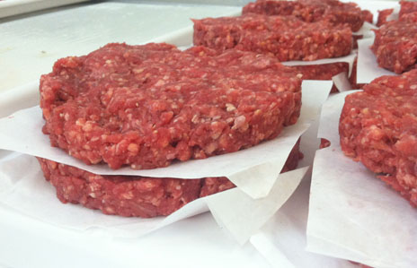

Fast food are easy to make, beacause the food materials are already there, such as the he beef or chicken patty, lettece stripes, ketchup, burger sauce, fries, are chesse. The drinks are already there in the machine which was sent by the company.Therefore the employers at Mcdonald's jods are much more easier compared to a chef. It takes a lot faster for them to get a meal ready to the customers than a normal restaurant. There is also another option which is a the "drive thrus', it is usually the top choice o people with limited eating time. The employers there do not need a very high degree of education, this made tese restaurants a preferably place for many employers. Due to the high amount of employers, the effeciency is also imcreasing. As you can see, there is a loop that makes the fast-food restaurants"faster" and more convenient for many customers, attracting more and more customers to come, becoming more and more successful.
